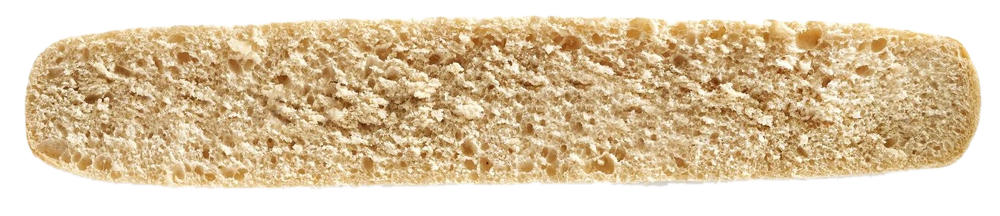
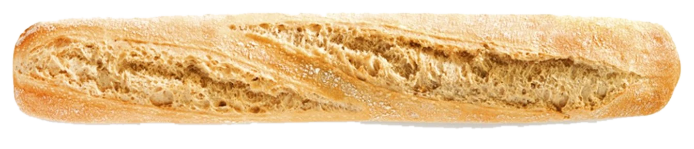

Barra Gourmet Ready


Descripción
La solución más rápida y sencilla para disfrutar de un pan recién hecho.
La Barra Gourmet Ready es una pieza de pan clásica, pensada para ofrecer máxima practicidad sin renunciar al sabor. Elaborada con una receta sencilla y honesta (harina de trigo, agua, sal, levadura, harina de cebada malteada y tostada, harina de trigo malteado y enzimas), esta barra se presenta como una solución perfecta para quienes necesitan un pan listo en segundos.
Su gran ventaja es su facilidad de uso: solo requiere descongelar para estar lista para consumir. No necesita cocción, aunque un rápido golpe de horno o tostado mejora su corteza y aroma, dándole un acabado recién horneado que encantará a cualquier cliente.
Propuesta de consumoPerfecta para hostelería, catering o supermercados que necesiten una solución rápida y de calidad.